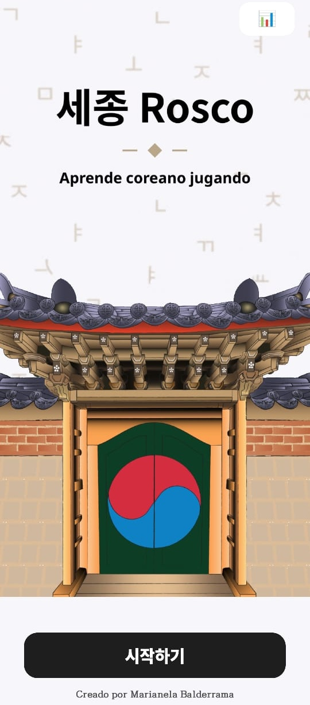
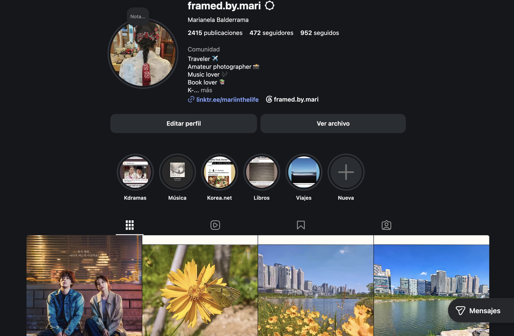
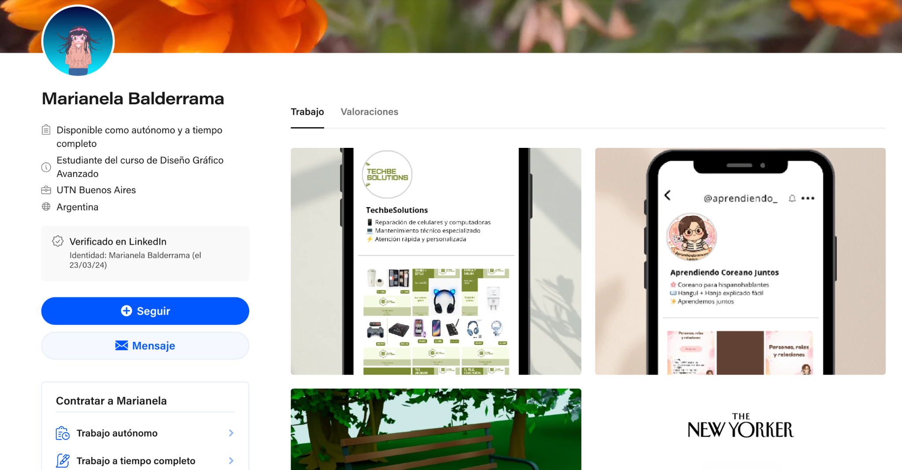

Marimu
Game Localization · Spanish Adaptation
Localization support, cultural adaptation and content review for Spanish-speaking audiences.
Digital Design · Animation · Visual Storytelling · Interactive Projects
I am an Argentine creative designer with experience in visual design, animation, cultural communication, educational content and interactive projects.
I am interested in creating projects that combine storytelling, aesthetic sensitivity and technology, especially in areas connected to audiovisual media, Korean culture, education and visual storytelling.
Game Localization · Spanish Adaptation
Localization support, cultural adaptation and content review for Spanish-speaking audiences.
Honorary Reporter · International Communication
Article writing, cultural communication and editorial content creation connected to Korea.
Client Communication · Workflow Support
Customer communication, workflow organization and support for digital work processes.
Writing · Analysis · Documentation
Formal writing, documentation analysis and information management within administrative and legal environments.
Interactive birth-rate visualization project developed through data storytelling, Adobe Animate animations and web publishing using Netlify.
Tools: Adobe Animate · HTML · CSS · JavaScript · Netlify
 View project →
View project →
Educational Android app designed to help students practice Korean vocabulary through a game-based learning experience inspired by Pasapalabra. It includes gameplay modes, review practice and vocabulary memorization tools.
Tools: Android Studio · Kotlin · Material Design · UX/UI

View demo →Selection of audiovisual projects, motion graphics, 3D animation and video editing.
Featured articles published as an Honorary Reporter, combining writing, cultural communication and visual editing.
4 Korean dramas that inspire you to pursue your dreams

Personal visual work focused on travel, nature, urban environments and aesthetic sensitivity.

View photography →Visual and educational content focused on Korean language and culture.
 View Instagram →
View Instagram →
Digital content and visual identity work focused on technological solutions.
 View Instagram →
View Instagram →
Selection of digital design, visual pieces, 3D work and creative projects.

View Behance →